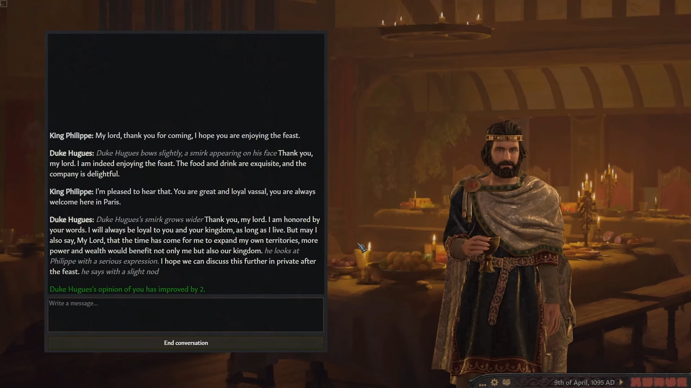
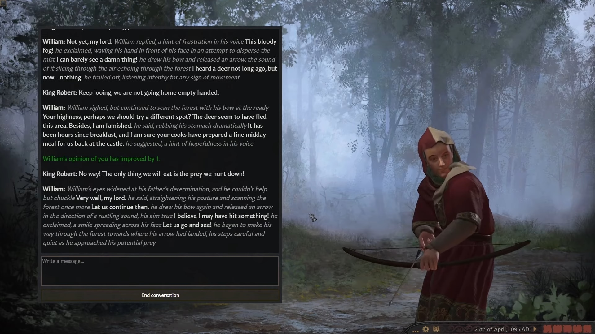

Луни Вічності
Психологічний трилер від першої особи
Історична пригодницька гра в світі, де час руйнується. Ви граєте за Каеля — молодого архіваріуса, що володіє здібністю керувати фрагментами часу. Досліджуйте дивовижні локації:від древніх міст, застиглих в руїнах, до лісів, де час тече у зворотному напрямку. Розгадуйте загадки, використовуючи перемотування, зупинку або прискорення часу, і відкривайте таємниці зниклої цивілізації. Бийтеся з істотами, створеними через викривлення часу, комбінуючи зброю і тимчасові здібності. Ваші рішення визначать долю світу: чи врятуєте ви його залишки, чи дасте часові перезапустити все з початку?
